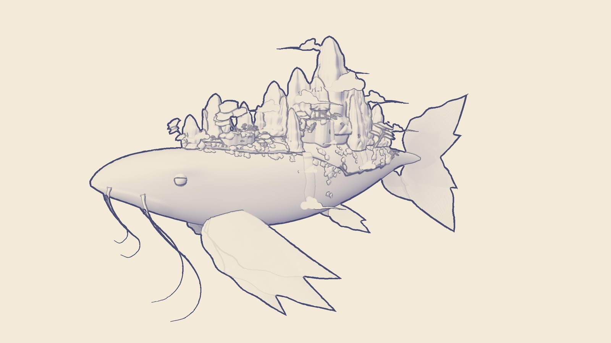
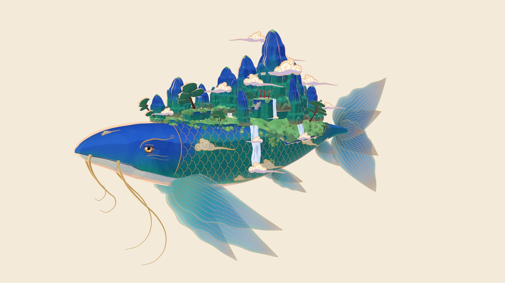
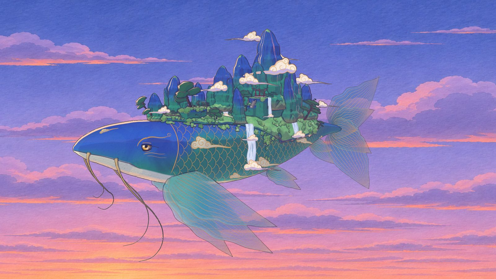
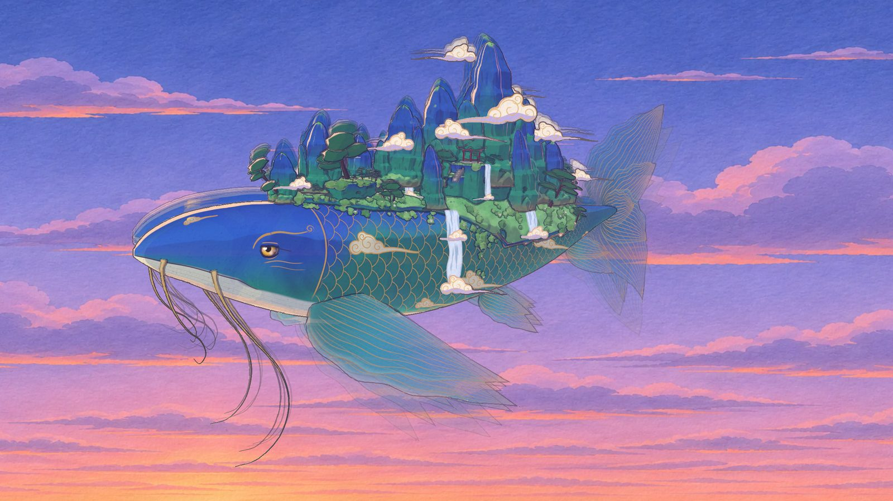

形：先有形。
engine/form
轮廓表放样出鱼身，翼型撑起胸鳍，沿脊传播的波推着全身游动；背上的仙山与松树按种子确定性地散布。

BEIMING ENGINE代码即影片
一条鲲，由代码
你看到的不是视频 引擎渲染的静帧
北冥引擎把造型、光影、墨线和纸纹都写成代码。同一份程序，渲出 1080p，也渲出原生 4K。
首屏画面：青绿仙山鲲背负仙山，在黄昏的云海上游动。
ENGINE
画风不锁在素材里。拆开这条鲲，每一层都是一段可以单独替换、单独验收的程序。
engine/form
轮廓表放样出鱼身，翼型撑起胸鳍，沿脊传播的波推着全身游动；背上的仙山与松树按种子确定性地散布。

engine/shade
三色分档的卡通着色把阴影量化成色块，背光在轮廓上勾出一道暖边。

engine/look
墨线从深度、法线和物体编号里算出来，每两帧抖动一次，像手描的线。
engine/stage
手绘底板分层摆进三维空间，远处罩上一层空气透视的薄雾。

engine/core/clock.js
镜头每帧都在动，鲲一拍三：每三帧才换一次姿态，这是手绘动画的呼吸。

另外四层：人（Canvas 2D 逐笔画人物），界（显示层与片名），声（程序化音效与混音），片（无头浏览器逐帧出片）。
0.52 毫秒：RTX 5090 上一帧重着色器的耗时。31 秒：原生 4K 整片 240 帧。同一份代码在工作站与 Mac 上渲出的 4K 成片，SSIM 0.973。
METHOD
代码不是素材的替代品，